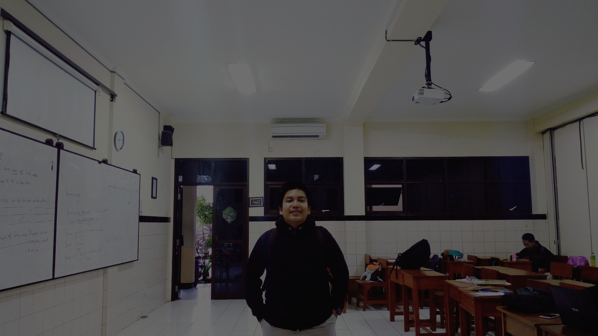

MUHAMMAD IZDIHAR HAZAZI
The Student Of Bogor High School Of Chemical Analyst
ABOUT ME
Nama saya Muhammad Izdihar Hazazi merupakan siswa SMK-SMAK Bogor saat ini saat duduk dibangku kelas 11. Saya lahir pada tanggal 16 Juni tahun 2000 di kota Bogor tepatnya di rumah sakit atang sanjaya dan saya sekarang saya berumur 17 tahun, saya memiliki tinggi badan berkisar 166cm dan berat badan 75kg. saya sekarang tinggal di Kab. Bogor kecamatan ciomas. saya merupakan anak ke 2 dari 2 bersaudara dimana kedua orang tua saya asli jawa barat, maka bisa dibilang saya merupakan orang sunda. Kaka saya seorang perempuan bernama Adzhani Huwaina Izazi dia merupakan lulusan SMK-SMAK Bogor angkatan 57, kini ia bekerja di Lab. Mikrobiologi super unggas jaya. Kini saya memiliki beberapa hobi yang sedang saya gemari seperti membuat & editing Film/Video, mengedit lagu, photography dan yang terarkhir adalah automotif.. saya suka dengan automotif mobil dengan modifikasi simple dan low, karena saya sejak kecil suka dengan yang namanya mainan mobil-mobilan.
Hobi otomotif memang terkenal dengan hobi yang high-class karena hobi yang satu ini lumayan memakan banyak biaya. Sebagian orang mungkin menganggapnya sebagai hobi yang nggak penting dan hanya buang-buang uang, tapi siapa sangka di balik kecintaan pada dunia otomotif, ternyata banyak banget keuntungannya. seperti memiliki banyak wawasan dan pengalaman dan juga memiliki banyak teman karena sering bersosialisasi. Saya hobi dengan mobil (automotif) dikarenakan sewaktu saya kecil saya sering bermain dengan mobil mobilan.. hingga besar ini masih terbawa dengan hobi atau kesukaan dengan mobil.
Hobi saya yang kedua ini saya suka menonton film. Film-film yang sangat sukai yaitu seperti Fast&Furious karena film itu memilik hingga 9 seri. dan pada tahun 2021 merupakan seri terakhir dari Fast&Furious. Nonton film ini adalah aktivitas yang penuh hiburan untuk melepas stres. Hobi menonton film ternyata tidak hanya memberikan hiburan saja
1. Dengan nonton film, kamu bisa mempelajari banyak hal baru yang sebelumnya gak Kamu ketahui. Film ini bisa menjadi sumber informasi buat Kamu.
2. Film bisa meningkatkan daya imajinasi Kamu lho. Imajinasi ini penting banget. KArena tanpa imajinasi mustahil ilmuwan bis amenciptakan banyak hal menkjubkan sampai dunia menjadi semodern sekarang ini.
3. Kebanyakan orang pasti lebih suka menonton film-film Hollywood yang mayoritas berbahasa inggris. Dengan memahami setiap dialog dengan cermat, pelan-pelan Kamu akan terbiasa mendengarkan bahasa asing.
4. Bukan hanya budaya modern yang kita dapat dari film, tapi juga culture budaya dari berbagai negara yang ikut ditampilkan atau menjadi tema dalam sebuah film. Seperti pola kehidupan suatu masyarakat di suatu kota dan tahun tertentu, gaya berpakaian, cara berbicara, dan seni yang menjadi identitas suatu kota/negara bisa dipelajari lewat film.